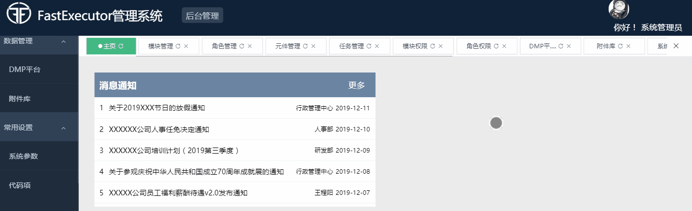

原文出处:本文由博客园博主Code_Roc提供。
原文连接:https://www.cnblogs.com/yanpeng19940119/p/12031382.html
原文连接:https://www.cnblogs.com/yanpeng19940119/p/12031382.html
后台管理系统中比较常见的布局是左边菜单栏，右边tab切换栏，但是一般的tab组件不包含tab页过多的切换问题的，所以需要个性化实现，本文的实现方案是滑动鼠标滚轮绑定tab达到切换的效果，先上一个动态图看下效果

tab滑动栏布局代码如下
这里只是循环放置了一排div，实现滑动需要对外部tab容器tabmain进行onwheel事件的绑定，主要原理是获取tabmain的包含滚条部分的长度与div的总长度（当然tabmain要指定overflow-y为hidden），计算滚动长度（通过scrollLeft()方法获取），与已滚动长度比较，加入判断滚动方向，通过event.deltaY判断，向上滚动为负值（对应tab向左滚动），向下滚动为正值（对应tab向右滚动），调用tabmian对象的scrollLeft可以实现滚动，完整代码如下
$(".tabmain").each(function (index, element) {
element.onwheel = function (event) {
var table = $("#tabmain");
var right = table[0].scrollWidth-$(element).width();
//table[0].scrollWidth为div包含滚动部分的全部宽度，$(element).width()为div的宽度，计算可得知滚动部分长度
//table.scrollLeft()为div已经滚动了多少，相比较就可以判断div是否滚动完毕
if (table.scrollLeft() < right && event.deltaY > 0) {
//禁止事件默认行为（此处禁止鼠标滚轮行为关联到"屏幕滚动条上下移动"行为）
event.preventDefault();
var left = (table.scrollLeft() + 100);
table.scrollLeft(left)
}
if (table.scrollLeft() > 0 && event.deltaY < 0) {
//禁止事件默认行为（此处禁止鼠标滚轮行为关联到"屏幕滚动条上下移动"行为）
event.preventDefault();
var left = (table.scrollLeft() - 100);
table.scrollLeft(left)
}
}
})
滚动条我们也需要美化实现以下，通过重写::-webkit-scrollbar属性，针对类或者指定dom重写只需要加上选择器即可，例如.tabmain::-webkit-scrollbar
页面为系统集成页面所以不方便放例子了，相关效果查看可以查看码云FastExecutor项目的演示示例，页面具体代码地址: